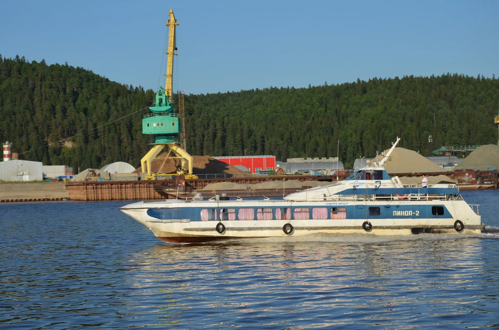
По рекам Югры: люди, машины и грузы
АО «Северречфлот», Ханты-Мансийск. Пассажирские теплоходы, паром Приобье — Андра, грузовые перевозки, причал, док и отстой судов.
Навигация 2026 года завершена. Самая поздняя ориентировочная дата закрытия маршрута — 8 ноября. Что работает зимой
Выберите задачу
Пассажирские перевозки
Скоростные суда ходят по местным и транзитным линиям в Югре и на Ямале.
- Билет онлайн или в береговой кассе. Предварительная продажа — до 45 дней, в начале и конце навигации срок может быть меньше.
- Онлайн-продажа закрывается за 2,5 часа до отправления с начального пункта.
- Ручная кладь бесплатно — до 36 кг, на скоростных судах до 20 кг. Ребёнок до 5 лет без отдельного места — бесплатно.
- Возврат: до отправления — с комиссией за оформление; при отмене, задержке или переносе рейса — полный.
Сейчас касса речного вокзала в Ханты-Мансийске работает по межнавигационному графику: 05:00–19:00, обед 12:00–14:30, технический перерыв 10:30–11:00.
Помощь маломобильным пассажирам в Ханты-Мансийске, круглосуточно: 8 908 881-52-73
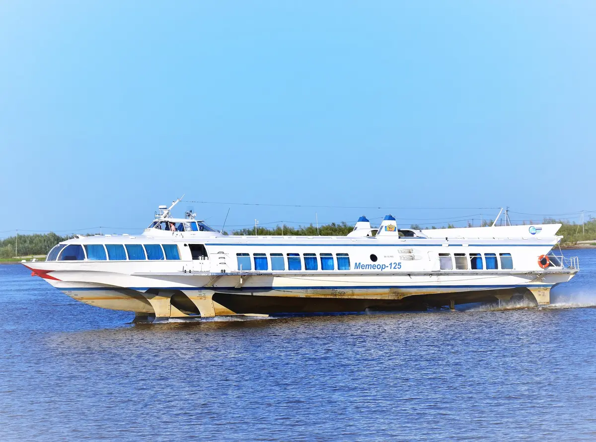
Паром Приобье — Андра
Паром компании обслуживает линию Приобье — Андра. В расписании навигации 2026 года на сайте компании значится паром РТ-423.
- Места погрузки — в пгт Приобье и в посёлке Андра.
- Пристань Приобье в навигацию отвечает с 07:00 до 20:00.
- Заявку на паром можно оставить через форму на сайте.
Сейчас навигация закрыта. Расписание на 2027 год появится здесь после публикации; расписание 2026 года не действует.
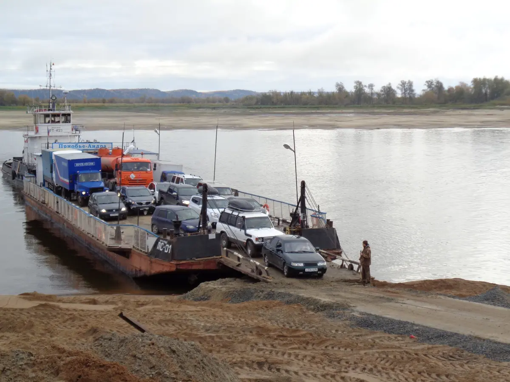
Перевозка грузов по реке
Обский и Обь-Иртышский бассейны: Ханты-Мансийский и Ямало-Ненецкий округа, Тюменская, Томская и Омская области.
- Что возим: навалочные и тарно-штучные строительные грузы, лесную продукцию, пиломатериал, металлоконструкции, оборудование.
- Буксировщики мощностью 300, 450, 600 и 800 л. с.
- Несамоходные баржи-площадки грузоподъёмностью 2830 т.
- Щебень, песок, гравий — разовая перевозка до 8500 т.
Контакт по грузам: заместитель коммерческого директора, начальник отдела маркетинга по грузовой и коммерческой работе. +7 3467 33-94-62, доб. 1247.
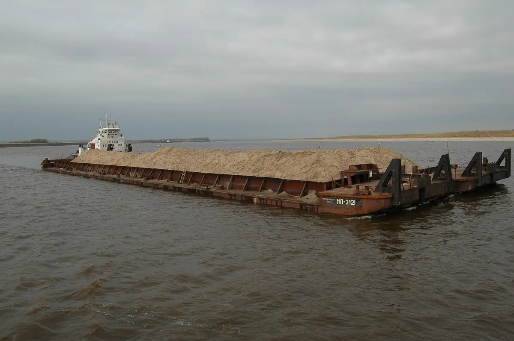
Док и отстой судов
Для судовладельцев в Ханты-Мансийске: докование, дефектация корпуса и хранение флота между навигациями.
- В док принимаем: суда до проекта 1741А, плавкран грузоподъёмностью 5 т, несамоходные баржи грузоподъёмностью 600 т.
- Отстой с подъёмом на причальную стенку — в навигацию и межнавигацию.
- Холодный отстой судов в акватории затона.
Главный инженер (док): +7 3467 33-97-60. Отстой флота: +7 3467 33-94-62, доб. 1247.
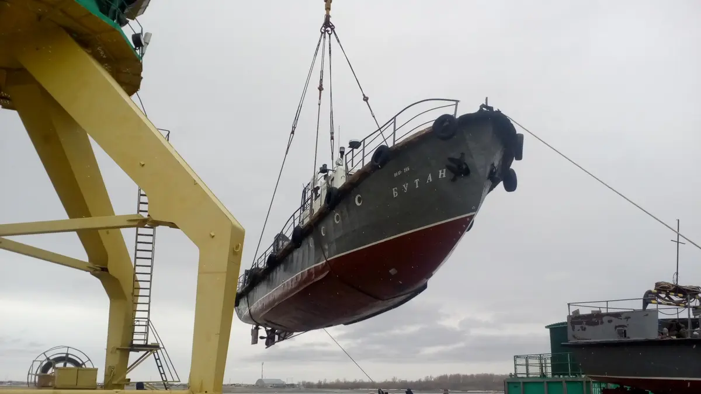
Грузовой причал, склад и материалы
Территория компании в Ханты-Мансийске рядом с автодорогой Тюмень — Ханты-Мансийск.
- Хранение грузов и аренда территории — в навигационный и межнавигационный периоды; принимается на стоянку автотехника.
- Погрузка и выгрузка: навалочные, тарно-штучные и негабаритные грузы.
- Перегрузка плавкранами 5 и 16 т в любых пунктах Обь-Иртышского бассейна.
- Щебень и песок. Щебень продаётся круглый год, самовывоз: ул. Объездная, 25.
Коммерческий отдел: +7 3467 33-94-62, доб. 1247.
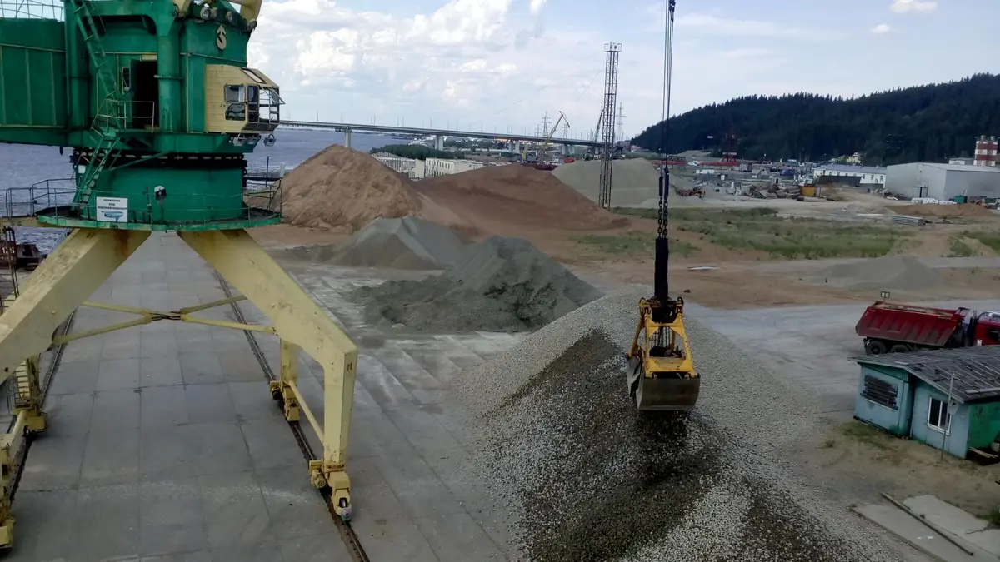
Реки, по которым мы ходим
Выберите маршрут: теплоход пройдёт по нему, а рядом появятся пристани. Паром Приобье — Андра — в той же схеме.
Пристани, расстояния в километрах и суда — из расписаний навигации 2026 года на severflot.ru. Расписание на 2027 год на 26 ноября 2026 года там не опубликовано, поэтому дней и часов отправления здесь нет. Ещё в расписаниях 2026 года: Ханты-Мансийск — Кышик и Ханты-Мансийск — Пырьях на судах на воздушной подушке.
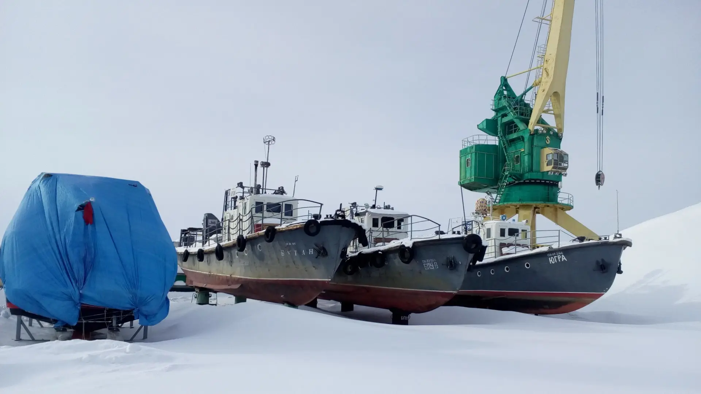
Река встала. Берег работает
Отстой флота
Суда поднимают на причальную стенку или оставляют на холодный отстой в затоне.
Спросить о местеХранение и стоянка
Грузы принимают на территории компании и в межнавигацию, автотехнику — на стоянку.
Спросить о площадиЩебень круглый год
Фракции 5–20, 20–40, 40–70, навалом или в биг-бэгах по 1 т. Самовывоз с ул. Объездной, 25.
Заказать щебень
Грузовой причал в Ханты-Мансийске
Компания называет его единственной в городе оборудованной причальной стенкой. Перевалка на суда и автотранспорт возможна круглосуточно.
- портальные краны для тарно-штучных и негабаритных грузов
- до32т
- пропускная способность по навалочным грузам
- 150т/ч
- общая площадь тыловой зоны
- более6,5га
- в тылу: башенный кран 10 т и автокран 25 т
- 10 и 25т
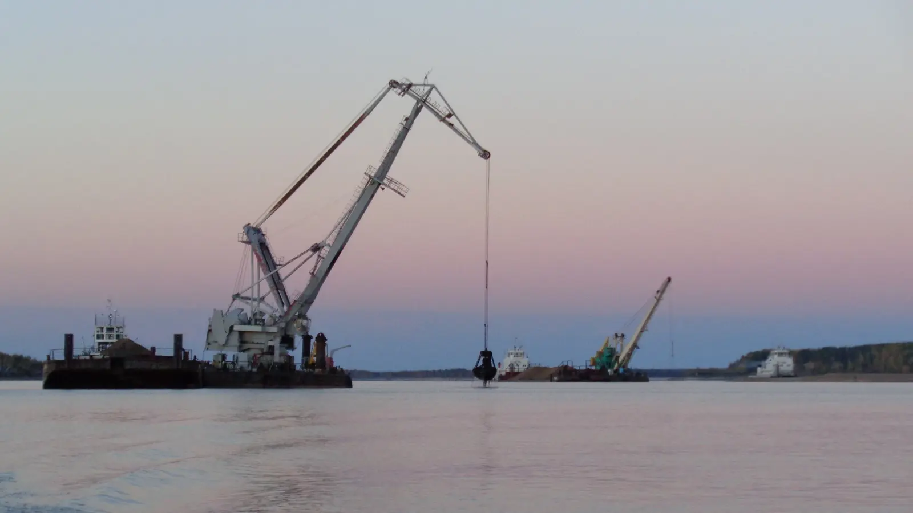
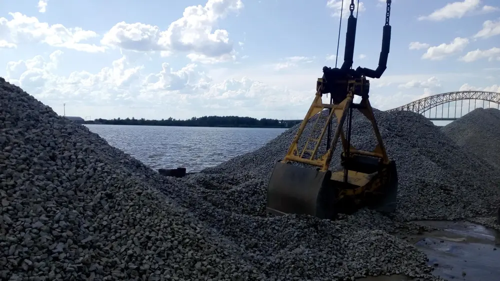
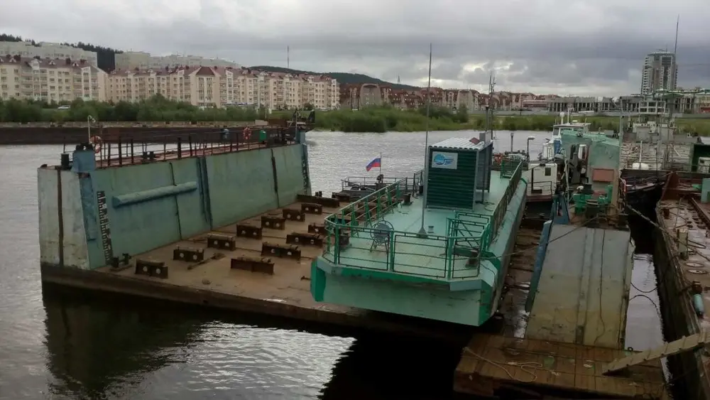
Песок и щебень
Строительный песок компания добывает на Сурей-Юганском месторождении, на Большой Оби в 15 км от деревни Нижние Тугияны. Модуль крупности — от 1,55 до 2,42 мм; небольшие партии — от 1 т в биг-бэгах. Щебень из плотных горных пород — с Новобибиевского карьера, по ГОСТ 8267-93. Возможна доставка по реке в посёлки Тюменской области, Югры и Ямала.
Суда на линиях
В расписаниях 2026 года также названы «Восход», «Валдай», «Валдай 45Р», «Югорский», «Югорский-10», суда проекта А-145, «Фарман Салманов», «Ляд Айваседо», суда на воздушной подушке и паром РТ-423.
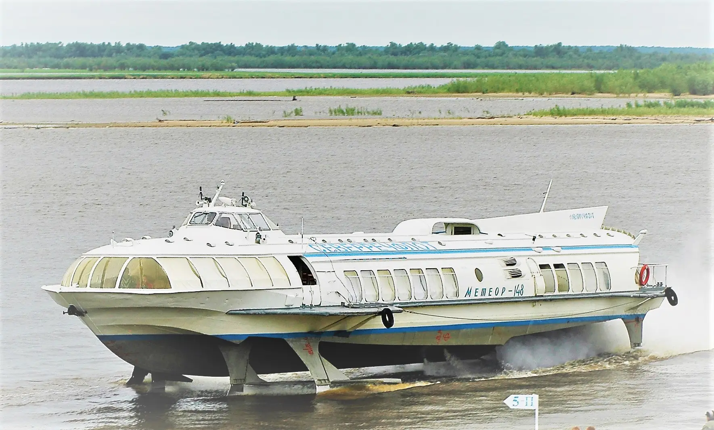
«Метеор»дальние линии: на Берёзово и Салехард 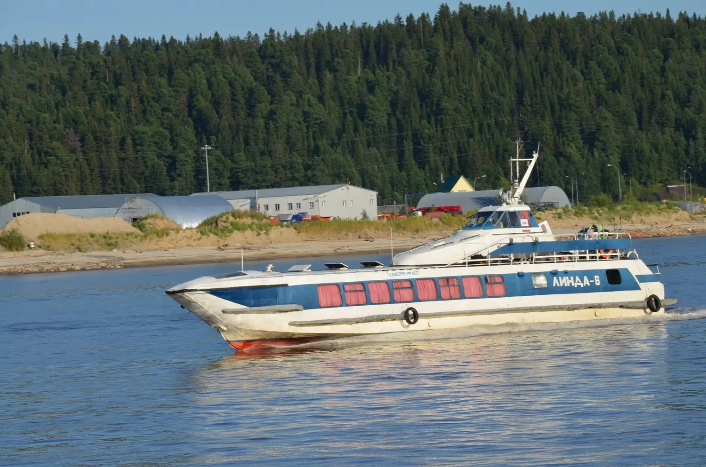
«Линда»Берёзово, Игрим, Октябрьское, Троица 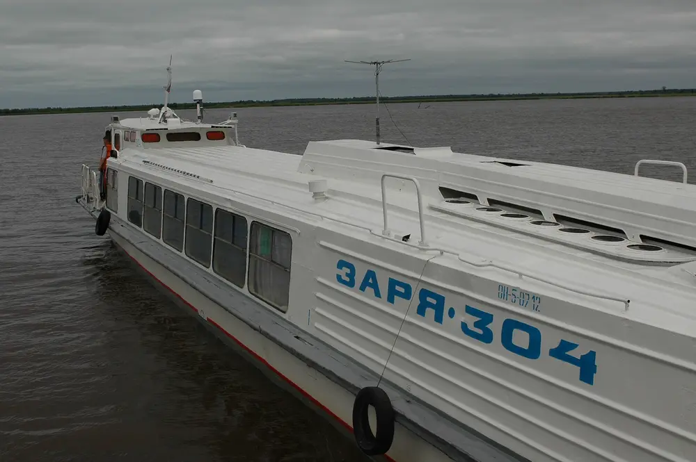
«Заря»Кондинское, Угут, Ларьяк, Белоярское направление
От пристани Самарово
Предприятие выросло из пристани в селе Самарово, у слияния Оби и Иртыша. Документы по личному составу сохранились с 14 августа 1941 года.
- пристань Самарово Нижне-Иртышского пароходства
- Ханты-Мансийский эксплуатационный участок
- районное управление Иртышского пароходства
- Ханты-Мансийский речной порт
- АООТ, с 1997 года ОАО «Ханты-Мансийский речной порт»
- ОАО «Северречфлот»: постановление губернатора округа № 26 от 30 января
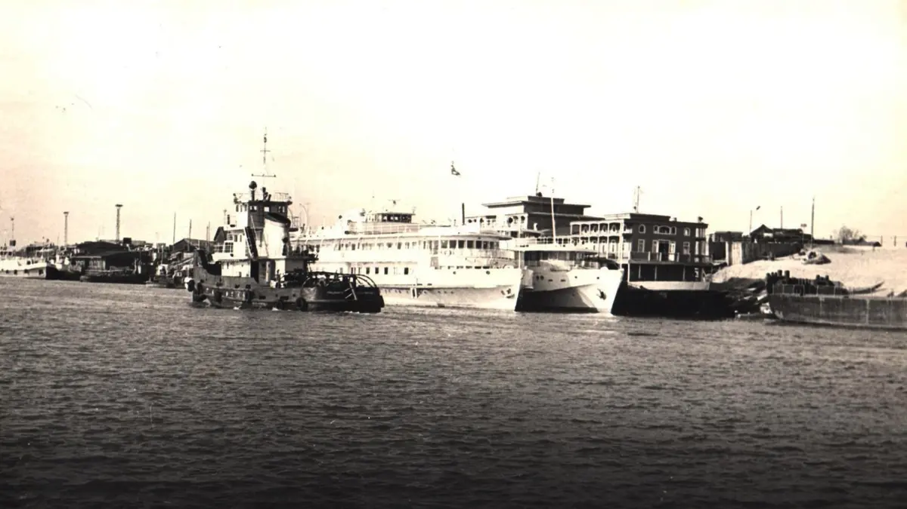
Руководство
- Сандулов Сергей Григорьевич
- генеральный директор
- Шипилина Анастасия Александровна
- заместитель по пассажирским перевозкам
- Мочернюк Николай Дмитриевич
- заместитель по безопасности судоходства
- Шашкова Оксана Валерьевна
- заместитель по экономике и финансам
- Паргунькин Олег Петрович
- главный инженер
- Фролова Светлана Леанидовна
- главный бухгалтер
Лицензии Ространснадзора
- Перевозка пассажиров внутренним водным транспортомМР-2 № 000012 от 12.04.2012
- Перевозка опасных грузов внутренним водным транспортомМР-1 № 000329 от 17.07.2012
- Погрузка и выгрузка опасных грузов на внутреннем водном транспортеМР-4 № 000183 от 30.05.2012
По сканам из раздела «Лицензии» на severflot.ru. Выданы ОАО «Северречфлот».
Телефоны и кассы
628001, Ханты-Мансийск, ул. Бориса Щербины, 3 (речной вокзал). Контора: пн–пт 8:00–17:00, перерыв 12:00–13:00.
Пристани и справочная часы навигационного периода
- Единый номер, доб. 105:00–20:00, обед 13:00–14:008 800 350-63-90
- Ханты-Мансийск05:00–20:00, обед 13:00–14:008 3467 38-88-35
- Приобье07:00–20:00+7 3467 83-30-34
- Берёзово05:00–20:00+7 3467 36-25-97
- Салехард06:00–18:00+7 3492 24-23-22
Электронные билеты техподдержка
- пн–чт 8:00–17:00, пт 8:00–12:00support@severflot.ru+7 3467 33-84-44
Кассы межнавигация
- Ханты-Мансийск, речной вокзал05:00–19:00, перерывы 10:30–11:00 и 12:00–14:30работает
- Приобье, Берёзово, Салехардне работают
Письмом: priemnaya@severflot.ru
Факс: +7 3467 33-94-65